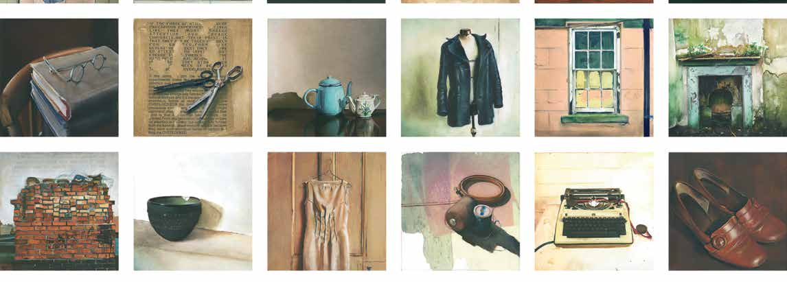

Festival Opening : Re-Framing the Domestic in Irish Art

There are many kinds of spaces, both physical and metaphysical, that artists play with in their work, and many spaces that we, as humans inhabit. However, perhaps the most familiar space, the one that has been the stimulus for much artistic enquiry, be it visual or otherwise, has been the domestic, or home space, as that is where our earliest and most formative experiences are shaped.
This exhibition takes as its root the domestic in all its simple complexities and contradictions, to ask what facts and fictions the domestic suggests to the artist and viewer today. Beginning with works that allude to the domestic within the Drogheda Municipal Art Collection, these have acted as pinpoints in which to thread contemporary works to create new ways of looking and experiencing the domestic in art and life.
In bringing together three different voices: Aoife Ruane, the director of the gallery; Amanda Coogan an artist and Jane Humphries an art historian/writer, their individual concerns have been creatively challenged to renegotiate the preconceived ideas that the domestic presents as a contained, safe, familiar concept. Literally, from discussions around a domestic kitchen table, these three voices have shared their ideas, knowledge and experiences.
Tuesday 29 April
Venue: Highlanes Gallery, Laurence Street
Time: 7:30 pm
Tickets: Free